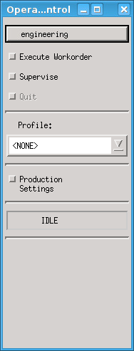
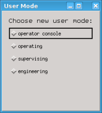
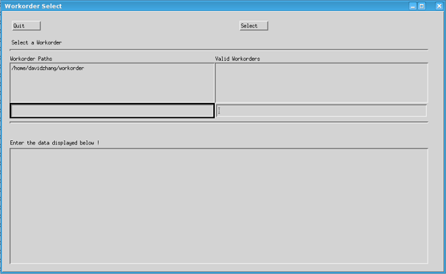
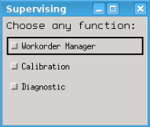
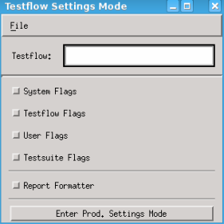

Operation Control window
When SmarTest is started, an Operation Control window pops up at the initial stage. The window mainly has engineering, execute workorder, supervise, and production settings buttons, which provide shortcut menus to relevant features.
Engineering
Normally, SmarTest starts in Engineering mode. Therefore, when the Operation Control window pops up, the engineering button is on the top, which indicates that the default user mode is engineering.


In this dialog box, you can select one of user modes: operator console, operating, supervising, and engineering.
Choose a user mode as described by Changing the User Mode.
Execute Workorder

See the Working with workorders section for more information about how to use the Operation Control window to handle workorders.
Supervise

In this dialog box, you can click Workorder Manager, Calibration or Diagnostic to open the function window.
See Using the Workorder Manager for how to use Workorder Manager.
Production Settings

In the dialog box, click to open the System Flags, Testflow Flags, User Flags or Testsuite Flags dialog box for setting relevant flags.
See also Accessing Testflow Settings for how to access SmarTest flags.
Reference topics
The other relevant topics:
- Working with workorders and subtopics
- Accessing Testflow Settings and subtopics
- Controlling a Production Run and subtopics
- Loading a data logging profile
- Setting the relevant flag directly